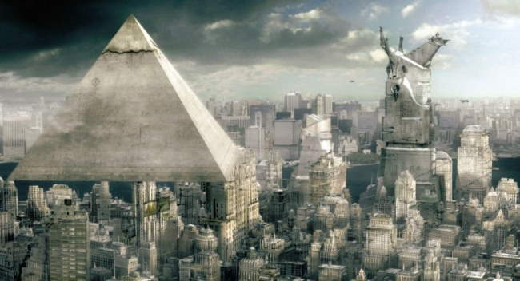
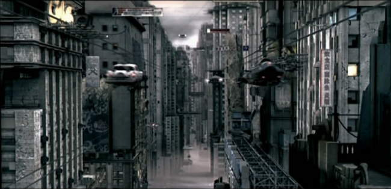
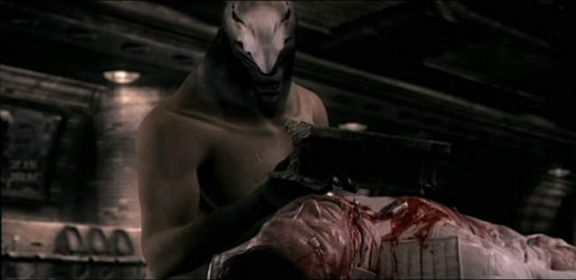
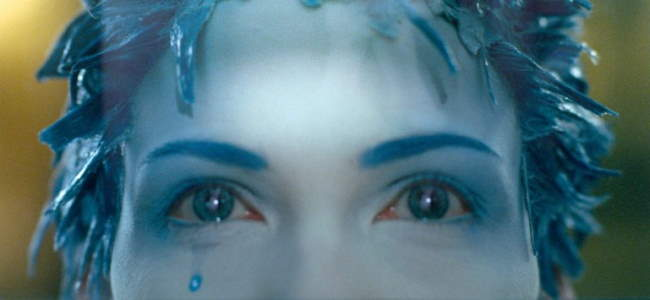
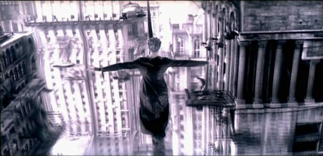
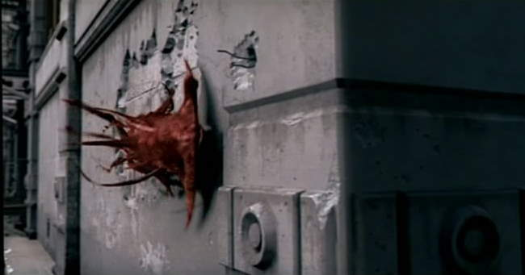
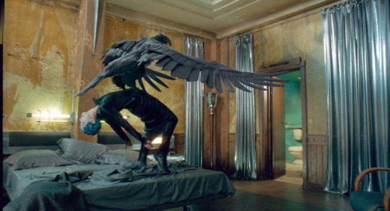
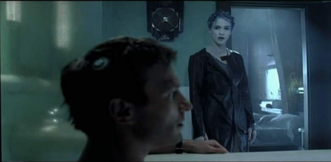

Movie review by : SFAM
Year : 2004
Directed by : Enki Bilal
Written by : Enki Bilal, Serge Lehman
Degree of Cyberpunk visuals : Very High
Correlation to Cyberpunk themes : High
Rating : 7/10
Key cast members :

Overview: Immortel is one of the 3 all blue or green screen movies made in 2004, and is based on graphic novel, the Enki Bilal's Nikopol trilogy, one of the best cyberpunk graphic novels ever made. Immortel provides us another cyberpunk dystopian future where an all powerful genetics engineering company called Eugenics has wreaked havoc upon most humanoid life forms. While the movie doesn't make exactly how this dystopian future occurred, the Nikopol Trilogy (1999) relates that two nuclear wars were the primary cause. Additional contributors to a further breakdown in an already horribly diseased society include the all-powerful, oppressive Eugenics corporation which appears to be trying to cheat death through various modern "vampiristic" means. Body modification is the order of the day for most of the masses, who are continually getting skin grafts and organ transplants to mitigate the effects of the various natural and genetically derived diseases that impact all aspects of life.
Interestingly though, in the graphic novel, Biblal set the time in 2023 - 30 years after Nikopol was sent into space for these crimes. Clearly, the novel deals with an alternate reality to our own time, whereas setting Immortel so far into the future, Bilal seems to indicate that he thinks this quality of cyberpunk future may be further out than he originally thought.

In case things weren't crappy enough, life gets even complicated when the Egyptian Gods' Pyramid appears - apparently the Egyptian god Horus is about to be sentenced to death by Anubis for his actions, but he is given a final 7 day furlough (one beat of an immortal heart) first. His decides to use this time to find a special woman, one of a few in the universe who can be impregnated by a God. This will allow Horus to cheat death (yes, cheating death is a pretty common theme in this). He has come to earth because his godly intuition tells him that such a woman has just arrived on earth through void between worlds. To do so, he needs to find a healthy host, but unfortunately, everyone he invades his tainted with disease and pollutants - along comes Nikopol to the rescue. Twenty-nine years prior to the time of the movie (2095), a rebel named Nikopol had galvanized public opinion against Eugenics, and for this, was sentenced to 30 years hibernation. Through an unfortunate accident, his cryogenics pod transport malfunctions and crashes, spilling his frozen body (minus his leg, which breaks off) out onto a bridge. Horus finds his body settles on Nicopol because his body, unlike virtually everyone else alive, has not been corrupted by pollutants and synthetic organs. Horus repairs Nikopol by transforming a very heavy steel rail into Nikapol's leg. Now, if Nikapol wants to walk (the leg is quite heavy), he will need to abide by Horus's wishes - which includes a contant need by Horus to take over Nikapol's body.

Horus, the god, and Nikopol the "terrorist" now team up to go in pursuit of a woman with white skin and blue hair (and, um blue "other" parts). It turns out that this woman, named Jill, is very mysterious in that she has no prior memories, and apparently has only been inhabiting her current body for 3 months. She is guided by a benefactor named John, who appears to be a traveler between worlds. The story proceeds with Jill being captured and studied by a friendly Eugenics researcher and Nikapol/Horus seeking her out. Unfortunately, Eugenics has discovered Nikapol's escape (by analyzing the leg), and have sent genetically enhanced shark-like nasties after him to kill him.

Unfortunately, there is too much going on in this movie for it all to be worked out to proper satisfaction. The pacing feels haphazard and rushed, and many interesting threads are simply not pursued to the extent I would have liked. Some scenes simply stick out like a sore thumb, without a real purpose. While I think Bilal chooses the "key" thread to complete his movie, Immortel seems begging for an extended edition type thing, where the extra meat and guts can be properly filled. Instead we are left with many interesting and completely unanswered questions. On the plus side, there is nice chemistry between Kretchman and Hardy - they have some nice love scenes and cool dialogue moments.

The Visuals: Wow, if there was ever a tough one to rate the visuals, Immortel fits the bill. The background scenery and many of the shots are simply stupendous - really some of the best shots I've seen on film are in this. The blue-haired chick, Jill, is totally sexy. Yet at the same time, for whatever reason, only 3 of the primary characters in Immortel are "real", and the rest are poorly rendered CG characters - about even or maybe a step down from Final Fantasy. Worse, we start off with pretty strange CG Egyptian creatures (where the non-polished effects sort of work), and then jump to real ones, and then spend about 20 minutes with only lousy CG ones before returning to real characters again. Interestingly, the CG characters start getting better near the end. Its almost as if they had a separate company do these and they were learning on the job. The Bottom line with the characters though is that I see no reason why they didn't use real actors - this would have been cheaper and more realistic. This is an example of someone getting a little too cute with the technology.

This is a shame, because again, the background scenery, and some of the shots themselves are simply breathtaking. Especially their use of a the various color palettes are simply phenomenal. Cityscapes are all done in grey-blue hue, whereas various other shots are either a dark gold-blue tone or a neon green-blue tone. Some of the creatures, specifically the Hammerhead "Dayak" shark creature is phenomenal. When he "oozes" out of the bathtub, EVERYONE watching will get the eebee-jeebees! There is a great chase scene similar to the Fifth element where the police are chasing after the two leads while this incredibly cool Dayak shark sleaks after them along the buildings. Its to the point that I refuse to believe that the DG the company who did this shark is the same one who who animated the poorly rendered people.

The Sound: Immortel comes with DTS sound, which is terrific. Even though this is a French film, the dialogue is in English, so no subtitles (for me) are required, except for in the Egyptian God discussions and the final monologue, which is in French. The score and music choices are absolutely spot on. They continually raise the tone and tenor of Immortel to something interesting and other-worldly. I haven't searched for the soundtrack to Immortel, but it's good enough that I
probably will.

The Bottom Line: I wish there was another thirty minutes of story in Immortel to flush out the blind spots. I also wish they had used real actors for everyone instead of the CG characters. Had both of these happened, Immortel would definitely rate 10 stars. Both the pacing and most especially the CG characters were bad decisions which hurt the movie. But even having these detractors, there is enough of Immortel to make this a MUST SEE for any cyberpunk fan (and for god sakes, get the graphic novel if you haven't already!). There are many immersive shots, augmented with wonderful sound, that left my jaw hanging. I also found enough of a story to really enjoy this - and there's something to be said for leaving an air of mysteriousness to the film.